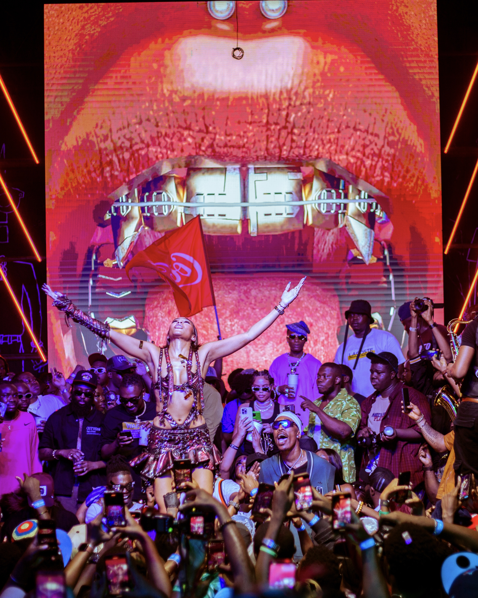
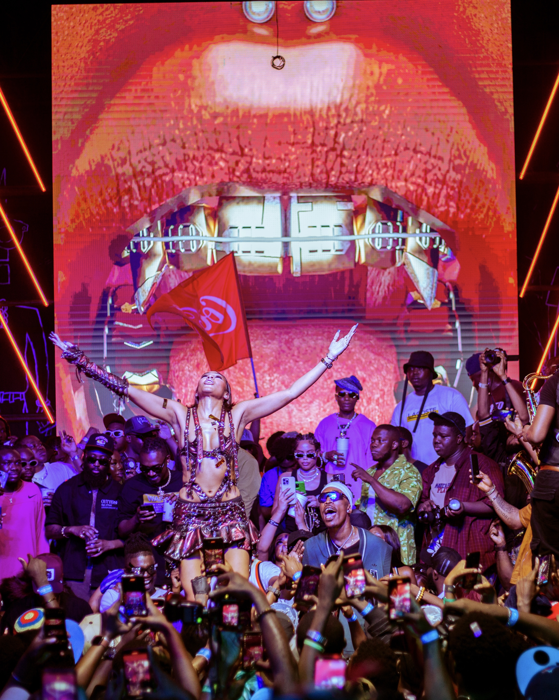

Photography
with style, soul,
and precision.
Explore my work ↗
 



Haarun Taofeek
I'm a photographer based in Lagos, Nigeria, with a passion for capturing moments that move the energy of live music, the emotion in a portrait, and the atmosphere that makes every event unforgettable.Growing up, I had an ear for music and an eye for photography.
Over time, those two passions came together, shaping the way I see and tell stories through my lens. I've had the privilege of working with incredible talents like Omah Lay, Victony, Skylatylad and more, documenting their artistry and the raw emotion that surrounds their performances.
Whether I'm shooting a concert, portrait, or live event, my goal is to capture intensity every detail, every light, every feeling that makes the moment real. My style blends boldness and depth, turning fleeting scenes into lasting visual stories.
Let's create something unforgettable.